About MahtRa
MahtRa makes resort wear in linen and silk, cut for long heat and old stone.
Season One
Eight pieces
-
Enquire about the Sage Mini Skirt
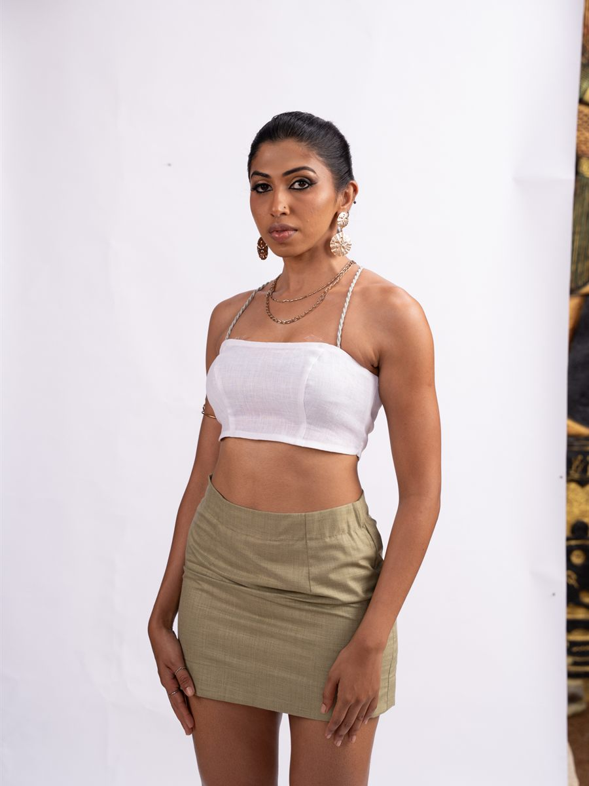
-
Enquire about the Blush Halter Set
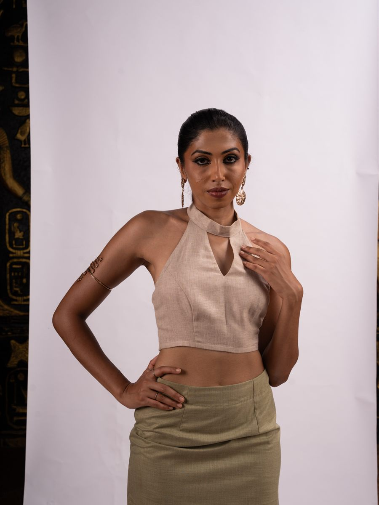
-
Enquire about the Fern Co-ord
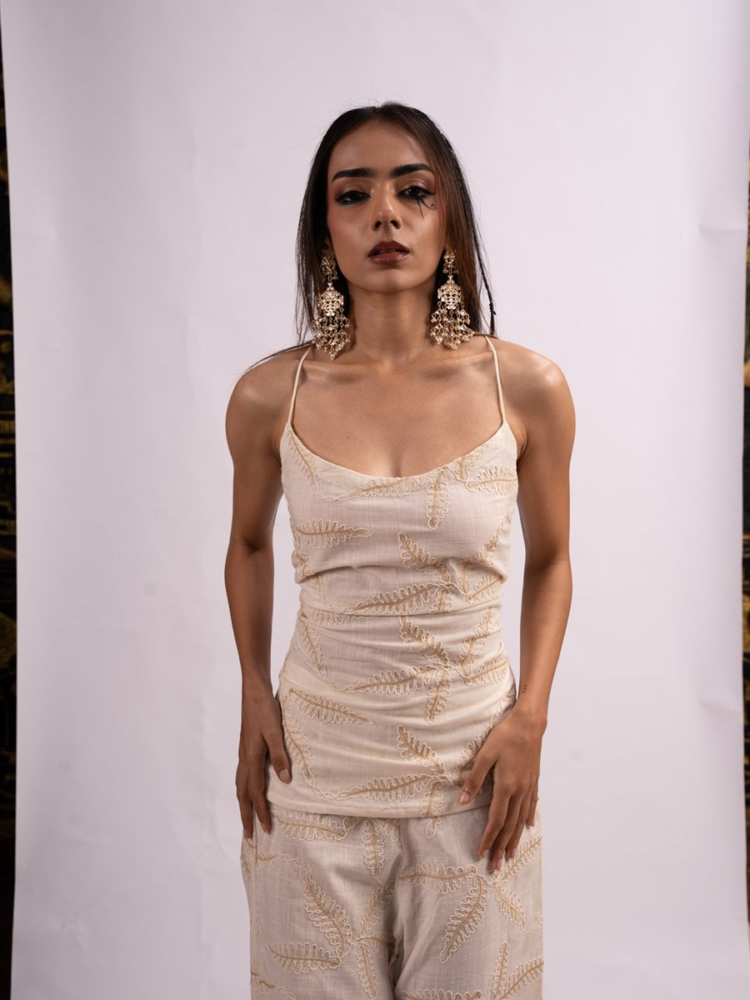
-
Enquire about the Greige Wrap Drape
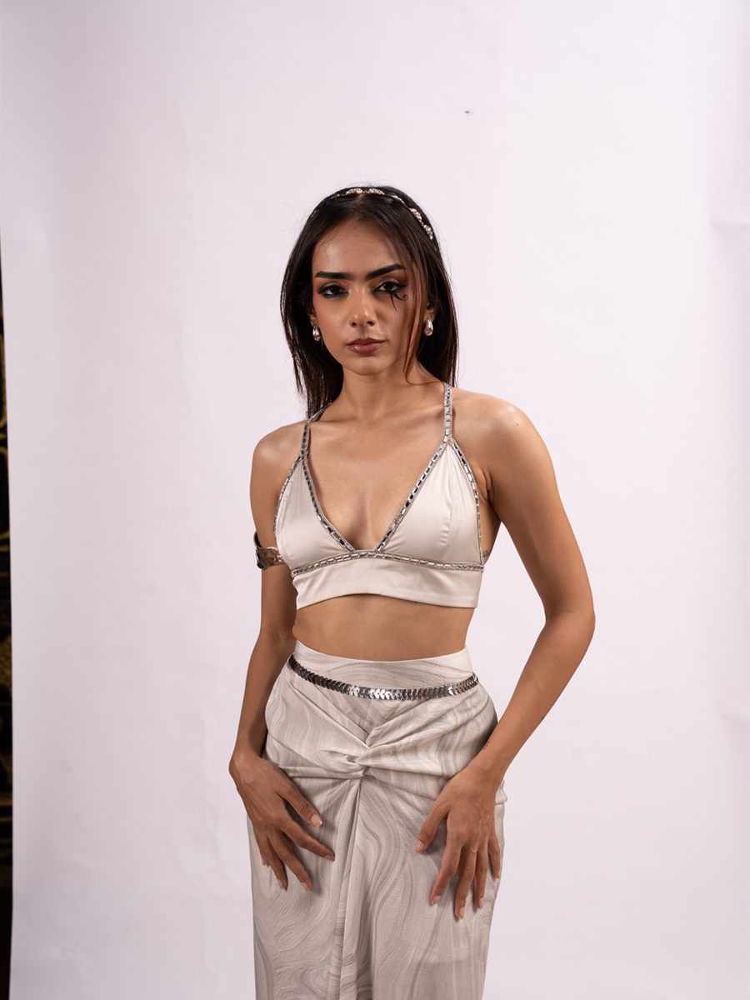
-
Enquire about the Gold Leaf Gown
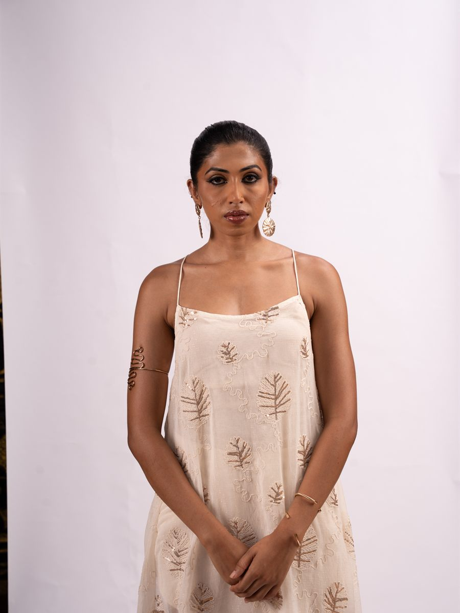
-
Enquire about the Lilac Tunic
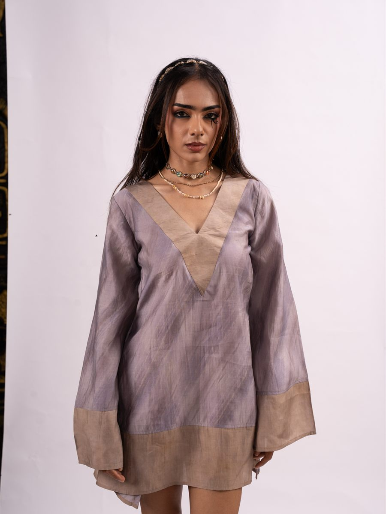
-
Enquire about the Stripe Halter Dress
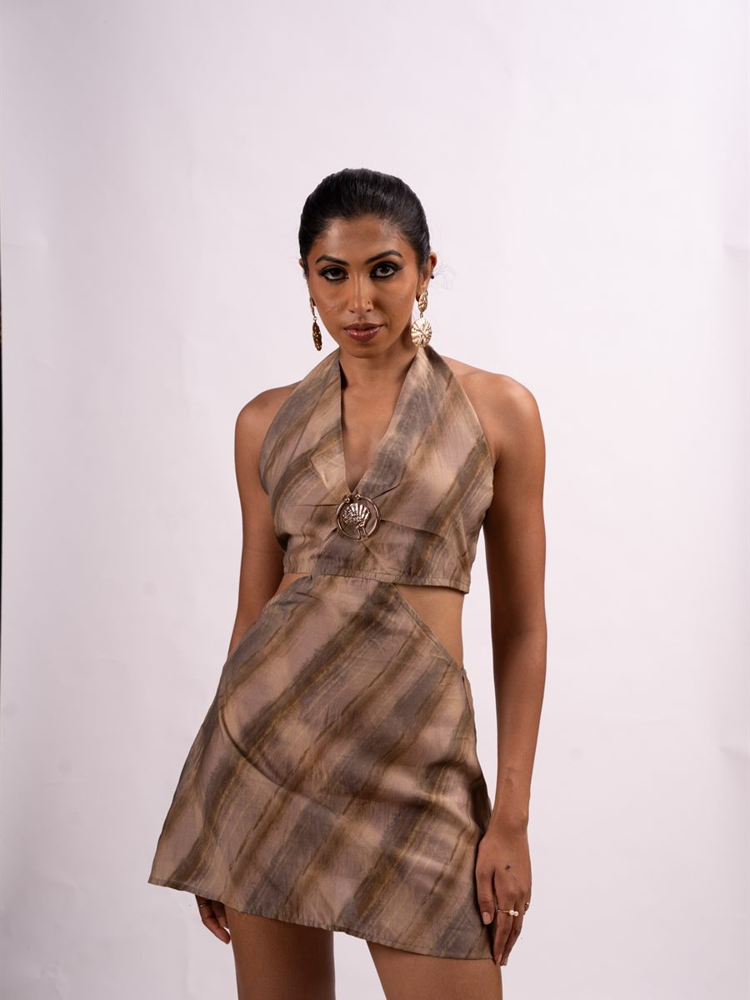
-
Enquire about the One-Shoulder Set
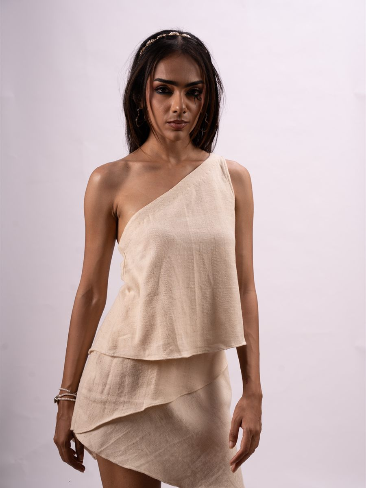
Editorial
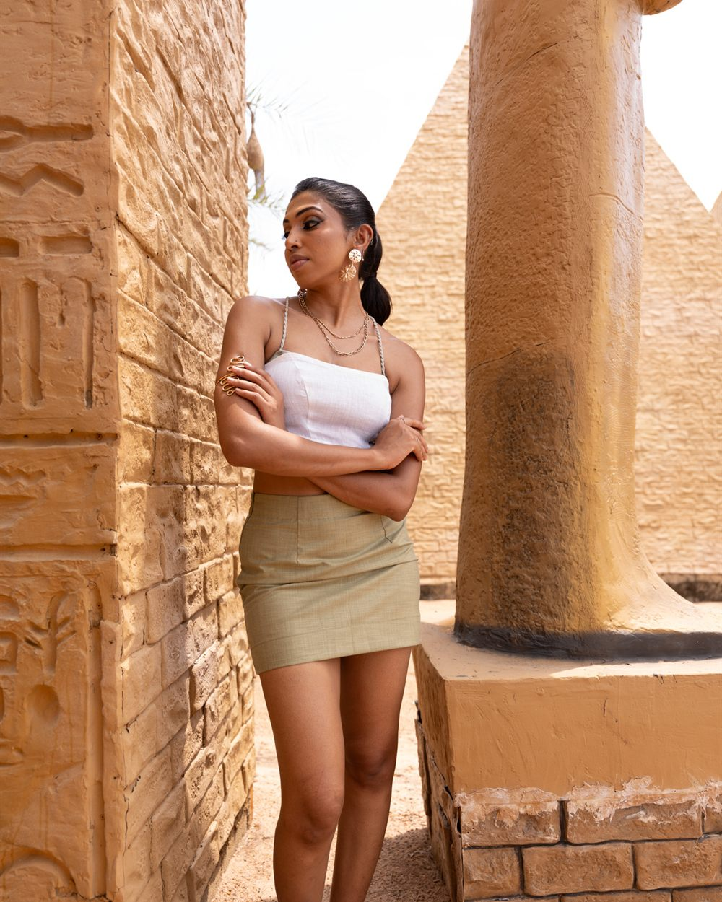
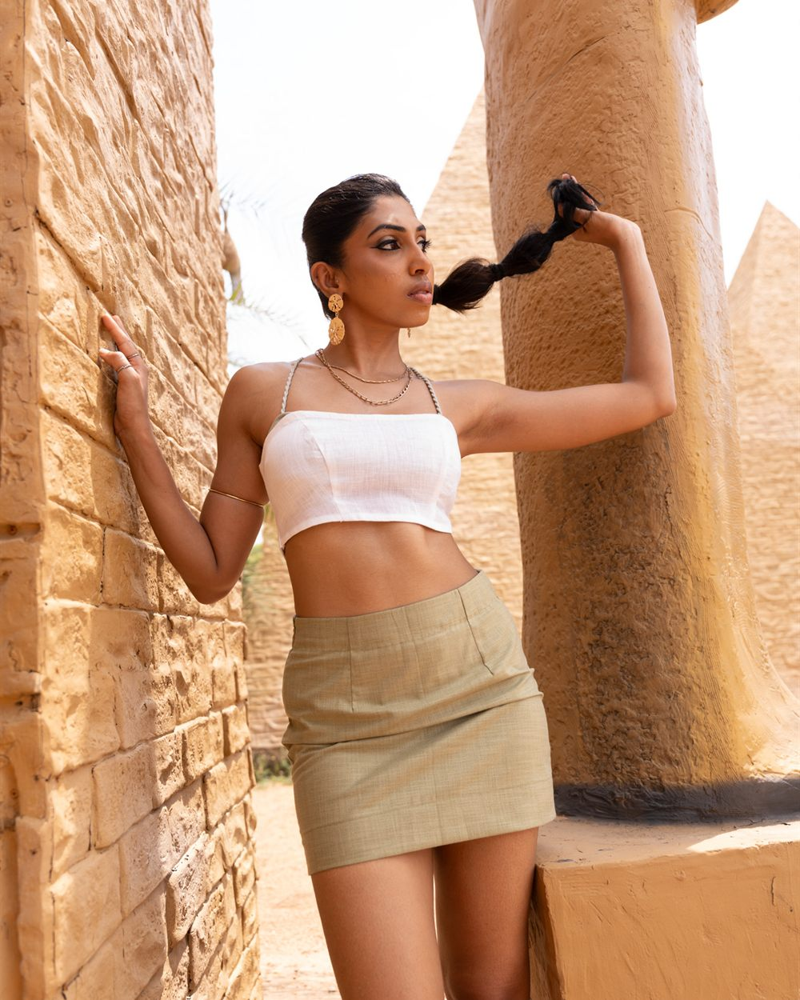
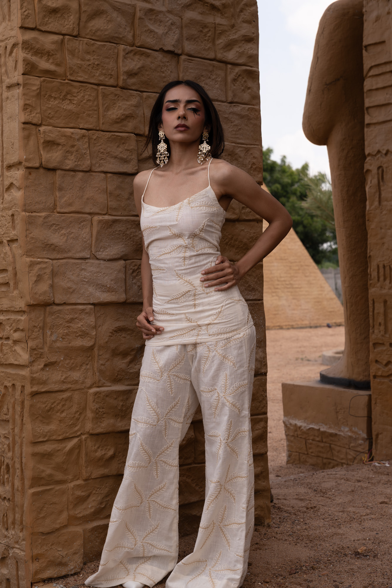
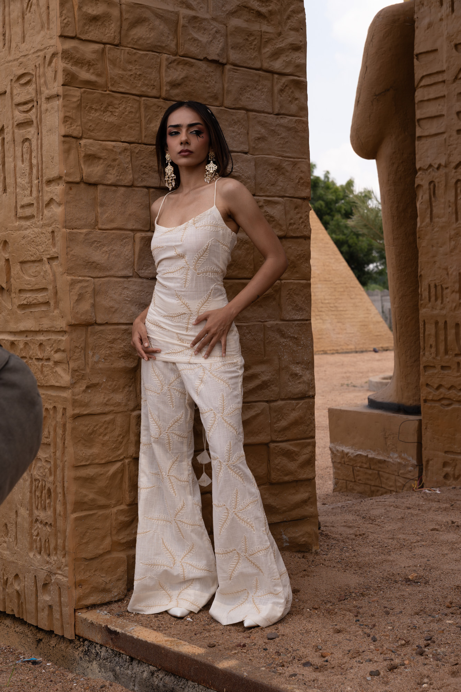
Enquire about a piece
Tell us which piece and we will come back to you with fabric, sizing and lead time.